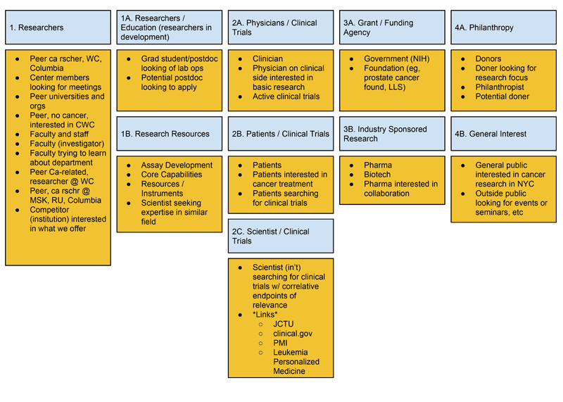
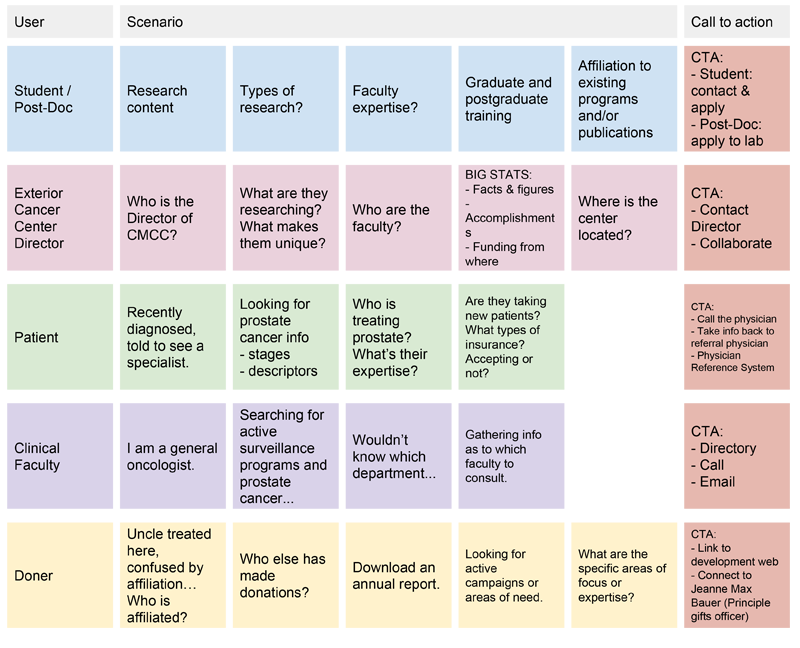
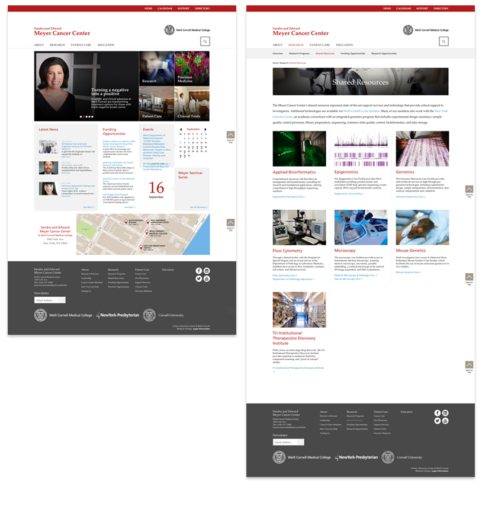

 <!DOCTYPE html>

<html>

<title>Jennings Hanna, Cornell Case Study</title>

<meta name="viewport" content="width=device-width, initial-scale=1">

 <!-- CSS RESET ERIC MEYER
 <link rel="stylesheet" type="text/css" href="assets/reset.css" />
 -->
<link rel="shortcut icon" href="/favicon.ico" type="image/x-icon">
<link rel="icon" href="/favicon.ico" type="image/x-icon">
 
 <!-- Skeleton CSS -->
 <link rel="stylesheet" href="assets/skeleton/normalize.css">
 <link rel="stylesheet" href="assets/skeleton/skeleton.css">
 
 <!-- MY CSS -->
 <link rel="stylesheet" type="text/css" href="assets/style.css" />
 
 <!-- GOOGLE WEB FONT - 'Open Sans' Normal 400 -->
 <link href='http://fonts.googleapis.com/css?family=Open+Sans' rel='stylesheet' type='text/css'>
 
  <!-- FONT AWESOME -->
 <link rel="stylesheet" href="https://maxcdn.bootstrapcdn.com/font-awesome/4.4.0/css/font-awesome.min.css">

</html>

<body >
	<div class="container top">
		<div class="row">
			<div class="twelve columns">
		<p class="color"><a href="index.html"></a>Wow! This is great! You're checking out at my case study about <span class="name">Content Strategy for the Meyer Cornell Cancer Center in New York City.</span> Enjoy and let me know if you have any questions (or find any typos)!</p>
				
				<p class="color">Throughout the summer of 2015 I worked with the directors of a new Cornell Medical facility dedicated to advance research and clinical trails. The head of the initiative had a lab at Harvard named after him. Working with doctors, I though, was going to be a difficult experience due to the abstract concepts utilized in content creation. But I quickly found the group to be incredibly willing to jump over the edge and take content strategy head on. Since the site was brand new (accompanying the facility). We had a fresh slate to start from.</p>
				<p class="color">We started by telling stories. And I soon found out that no one knows their users as well as doctors. Once I explained the game, they quickly began to fill in sticky notes with types of people they thought would come to the site and stick them on a wall. We then grouped them into an ecosystem to help us define user groups.
				</p>
				
				<p class="color">Once the groups were defined we challenged ourselves to create stories around them. With each story we incorporated the website's role, documented all of the steps and our eventual goal of that user. In the end we had a journey map like this:</p>
				
				<p class="color">I then lead the group to think about creation of a new site architecture through the lens of these user types and their specific goal related needs. I took many of their competitors sites and documented their contents into index cards and we played a classic information architecture game called card sorting.</p> 
				<p class="color">After that we had a rough concept of the sites architecture. I explained to them that this is where we get to put the future in the room to accommodate our users. The furniture would be their content. I asked them to really think about content as something they would use. Something that would act as a handrail where there are stairs or a exit sign clearly marked. I also encouraged them to tell stories and be editorial in their philosophy towards the institutions digital strategy.</p>
				<p class="color">The next to last step was I interviewed nearly twenty members of staff including all of the senior leadership. With those interview I created recommendations around the lines of user engagement strategies. Those we written in requirement to the designers.</p>
				<p class="color">Lastly, I created the wireframes that we used as the basis for the design. They included all of the content created by the wonderful staff at Meyer Cornell Cancer Center. The site is now live and you can visit it at <a href="http://meyercancer.weill.cornell.edu/" target="_blank">http://meyercancer.weill.cornell.edu/</a>.</p>
				
		</div>
		<div class="row">
			<hr />
			<p class="color">More case studies:</p>
		</div>
		<div class="row portfolio-cards">
			<div class="four columns">
				<div class="card spiral">
					<p class="color"><a href="spiral.html">Spiral NFL</a></p>
				</div>
			</div>
			<div class="four columns">
				<div class="card deja">
					<p class="color"><a href="deja.html">Send yourself postcards in the future</a></p>
				</div>
			</div>
			<div class="four columns">
				<div class="card super-bowl">
					<p class="color"><a href="super-bowl.html">Super Bowl Bracket</a></p>
				</div>
			</div>
		</div>
	</div>
	
<script src="http://ajax.googleapis.com/ajax/libs/jquery/1.11.1/jquery.min.js"></script>
<script src="assets/js/jquery.animate-colors-min.js"></script>
<script src="assets/js/spectrum.js"></script>
<script src="assets/js/analytics.js"></script>

</body>